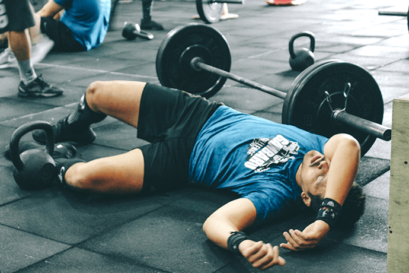
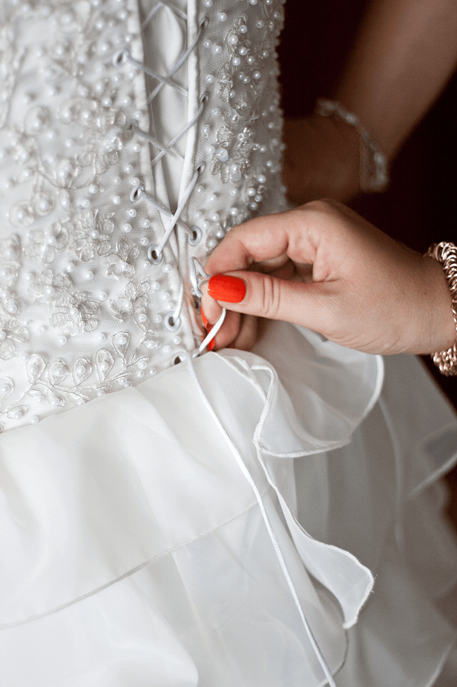
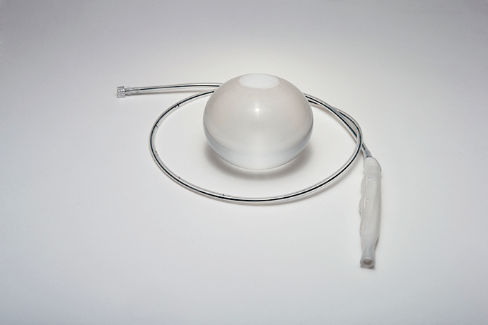
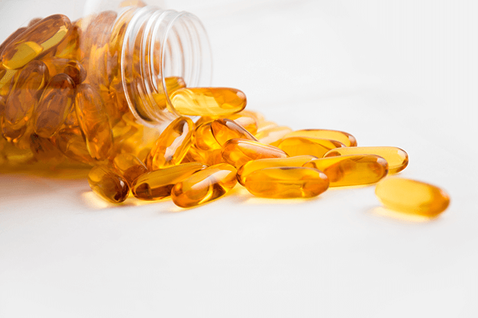
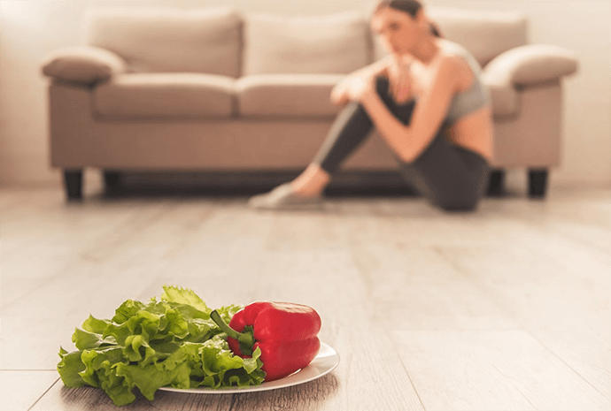

不健康减肥，会让自己的身体受到伤害哦！减肥需要策略。下列7种减肥方法不利健康，切勿盲目跟风。
· 束腰
金·卡戴珊声称用紧身束身衣维持身材，但在现实中，束腰胸衣只会让你感觉不舒服，甚至有可能损伤肋骨和导致内伤。
· 减肥汽球
吞下一颗特殊胶囊，它会在你胃里变成一个球，让你在3个月时间内胃口大减，从而达到减肥的目的。然而，减肥汽球有很可怕的副作用，梗塞和破裂都是潜在的威胁。
· 利尿剂和泻药
利尿剂和泻药会导致脱水和电解质失衡，不利于身体健康。如果你有便秘问题，多吃富含益生菌的酸奶等食品，不仅缓解腹胀，还能调整你的胃口。
· 减肥补充剂
对于许多减肥的人而言，“补充剂”听起来比“药”更安全。然而，由于营养补充剂的有效性和安全性监控力度不够，大部分时间是直到发生问题之后才加强管控。
· 不吃碳水化合物
碳水化合物主要存在我们日常吃的主粮中，你的大脑、肌肉和器官都需要依靠碳水化合物运行。你需要依靠它们得到能量以及减肥所需的能量。如果每天摄入的碳水化合物少于130克，你的大脑功能会因为缺乏血清素而受损。此外，多吃富含有益维生素和纤维的燕麦片或者全麦面包，有利你的心脏健康。

· 让自己挨饿
职业女性每天摄入的卡路里应当在1200到1400之间。如果你有健身习惯，还需摄入更多。
如果你挨饿，身体为了储存能量，就会暂时关闭新陈代谢系统，对减肥很不利。此外，挨饿之后大吃大喝的机率很高，让你功亏一篑。
· 不吃某类食物
除非你有过敏症，否则削减整类食品：乳制品，淀粉，坚果或鸡蛋会让你营养不良，减肥未必成功，却付出了健康的代价。